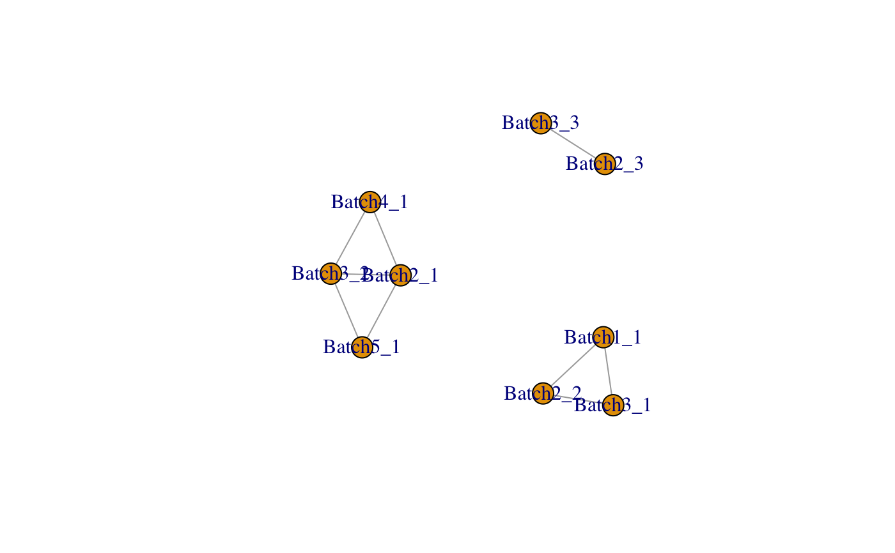

Create replicate matrix for scMerge algorithm using un-/semi-/supervised approaches.
scReplicate(sce_combine, batch = NULL, kmeansK = NULL, exprs = "logcounts", hvg_exprs = "counts", marker = NULL, marker_list = NULL, replicate_prop = 1, cell_type = NULL, cell_type_match = FALSE, cell_type_inc = NULL, dist = "cor", WV = NULL, WV_marker = NULL, parallelParam = SerialParam(), return_all = FALSE, fast_svd, verbose = FALSE)
| sce_combine | A |
|---|---|
| batch | A vector indicates the batch information for each cell in the batch-combined matrix. |
| kmeansK | A vector indicates the kmeans's K for each batch, length of kmeansK needs to be the same as the number of batch. |
| exprs | A string indicates the assay that are used for batch correction, default is logcounts |
| hvg_exprs | A string indicates the assay that are used for highly variable genes identification, default is counts |
| marker | A vector of markers, which will be used in calculation of mutual nearest cluster. If no markers input, highly variable genes will be used instead |
| marker_list | A list of markers for each batch, which will be used in calculation of mutual nearest cluster. |
| replicate_prop | A number indicates the ratio of cells that are included in pseudo-replicates, ranges from 0 to 1 |
| cell_type | A vector indicates the cell type information for each cell in the batch-combined matrix. If it is |
| cell_type_match | Whether find mutual nearest cluster using cell type information |
| cell_type_inc | A vector indicates the indices of the cells that will be used to supervise the pseudo-replicate procedure |
| dist | The distance metrics that are used in the calculation of the mutual nearest cluster, default is Pearson correlation. |
| WV | A vector indicates the wanted variation factor other than cell type info, such as cell stages. |
| WV_marker | A vector indicates the markers of the wanted variation. |
| parallelParam | The |
| return_all | If |
| fast_svd | If |
| verbose | If |
If return_all is FALSE, return a replicate matrix.
If return_sce is TRUE, return the followings
replicate matrix
mutual nearest cluster
replicate vector
highly variable genes used in scReplicate
## Loading example data set.seed(1) data('example_sce', package = 'scMerge') scRep_result = scReplicate( sce_combine = example_sce, batch = example_sce$batch, kmeansK = c(3,3), fast_svd = FALSE)#> group batch cluster #> 1 3 1 1 #> 2 3 2 1 #> 3 1 1 2 #> 4 1 2 2 #> 5 2 1 3 #> 6 2 2 3